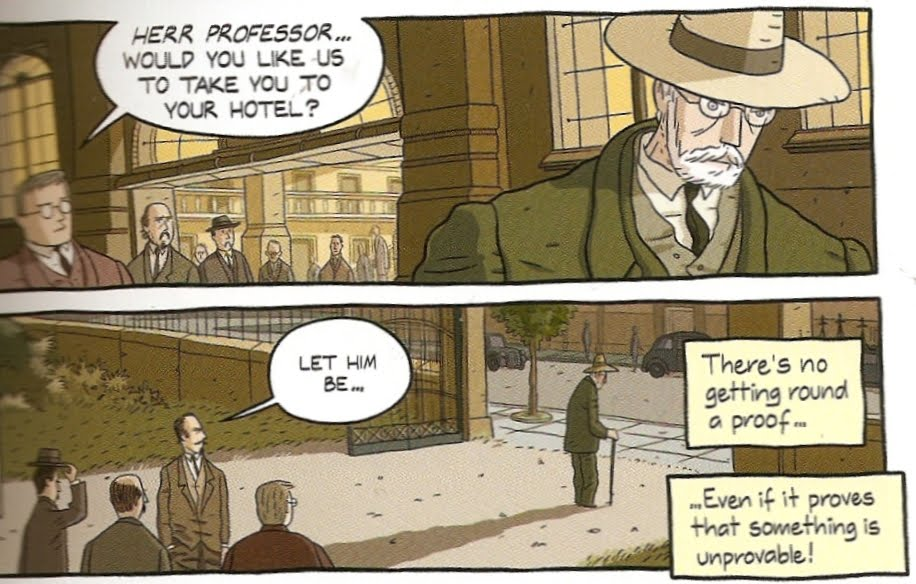

Máquina Universal
El diario de ayer titula “Falla informática paraliza el Metro y deja sin servicio a 37 mil personas. Es entendible la molestia de los usuarios, yo mismo me vi afectado. No voy a hablar de este fallo, pues no se los detalles, puede ser desde un error de programación hasta el corte de una línea de comunicación, pero como sea, este hecho refleja el alto grado de dependencia de nuestra sociedad tiene con las computadoras.
La razón es un principio fundamental de la informática, descrito por Andrew Hodges de la siguiente forma:
“Todo proceso mecánico, no importa cuan ridículo, maligno, pequeño, despilfarrador, o sin sentido, puede ser puesto en un computador.”
Y este principio está establecido desde 1936 gracias a Alan Turing. No es culpa de Turing el fallo en el Metro de Santiago de ayer, pero si algún programador cometió un error en el sistema, es una consecuencia de este poderoso principio.
La máquina de Turing es una máquina universal.
Miren su smartphone, la computadora reemplaza o controla cualquier máquina que hayamos creado hasta ahora. Sus teléfonos ya no sólo son teléfonos, son relojes, calculadoras, cámaras de video, cámaras fotográficas, lectores de barra, máquina de juegos, mapas, brújulas, radio, instrumentos musical, reproductor de música, sistema de comunicación a distancia, televisión, etc, etc. Basta contar con el software adecuado y nuestro teléfono se puede convertir en cualquier cosa, es casi como magia.
“Toda tecnología suficientemente avanzada es indistinguible de la magia”, decía Arthur Clarke. Turing es el primer hechicero que nos dio las claves para dominar esta magia. Su máquina universal es el hechizo que permitió todo esto.
En 1935 Alan Turing se enfrentaba a uno de los desafíos pendientes de Hilbert, conocido como el Entscheidungproblem, y fue esto lo que llevó a la creación de las computadoras. Esta es parte de esa historia.
Ignoramus et Ignorabimus
Eran tiempos difíciles para La República las fuerzas del lado oscuro ganaban más y más adeptos. muchos Jedis perecían en manos de los Sith... eeem, perdón, esa es otra historia.

David Hilbert
Pero sí, la verdad es que la primera década del siglo XX si eran tiempos difíciles para las matemáticas. Esta disciplina estaba en una profunda crisis en el formalismo.
La escuela formalista es un grupo de matemáticos que consideraban que “la matemática es un juego —carente de significado— en el que uno lo practica con símbolos carentes de significado de acuerdo a unas reglas formales establecidas de antemano”. David Hilbert era un matemático alemán que había formado esta corriente de pensamiento. Se encontraba molesto en aquel tiempo debido a las paradojas que aparecían en los trabajos e intentos de axiomatización de las matemáticas de ese tiempo, como por ejemplo, la monumental obra de Russel y Whitehead: “Principia Mathematica”.
Hilbert era un hombre de caracter fuerte que se resistía a considerar que la mente tuviera alguna clase de limitación.

Emil du Bois-Reymond
En 1880 el fisiólogo y sicólogo alemán Emil du Bois-Reymond planteó en una famosa charla en la academia de ciencias de Berlin, que hay problemas que ni la ciencia ni la filosofía podrían resolver jamás. Esto lo resumió en la frase en latín “Ignoramus et Ignorabimus” (“no sabemos y no podremos saber”).
Para Hilbert esa concepción era errada, en 1930 replicó:
“No debemos creer a esos, quienes hoy, con apoyo filosófico y tono deliberado, profetizan la caida de la cultura y aceptan el _ignorabimus. _Para nosotros no hay ignorabimus, y en mi opinión para nadie en las ciencias naturales. En oposición al necio ignorabimus nuestro eslogan deberá ser Wir müssen wissen — wir werden wissen! ("¡debemos saber - sabremos!”).
Lo que no sabía Hilbert es que mientras él pronunciaba estas palabras un callado matemático austriáco destrozaba todo su programa con un brillante teorema.
Hilbert había propuesto en 1920 un programa de investigación para resolver las paradojas de las matemáticas y establecer un sistema formal que permitiera darle bases sólidas a esta disciplina.
Hilbert pedía que las matemáticas tuvieran, entre otros, estos atributos:
-
Formalismo, es decir, todas todas las afirmaciones matemáticas deberían ser escritas en un lenguaje preciso y formal, y manipuladas de acuerdo a reglas bien definidas.
-
Integridad, debía mostrarse una prueba de que todas las afirmaciones matemáticas pueden ser probadas en el formalismo.
-
Consistencia, Hilbert pedía una prueba de que ninguna contradicción puede ser obtenida en el formalismo de las matemáticas.
-
Decibilidad debería haber un algoritmo para decidir la verdad o falsedad de cualquier afirmación matemática.
El trabajo de Kurt Gödel descartó los tres primeros atributos solicitados por Hilbert, no es posible formalizar totalmente las matemáticas, y por lo tanto estas no pueden tener la propiedad de integridad, y además no pueden ser consistentes. Esto ya lo mencioné anteriormente.
Quedaba abierto el problema de la Decibilidad. Gödel se aproximó a este problema, pero en para resolverlo debía haber una buena definición de que se entendía por algoritmo.
El Enstscheindungproblem
El problema de la decibilidad es el famoso Entscheidungproblem. Lo que pide Hilbert es proporcionar un mecanismo que permita determinar si una afirmación dada es válida dentro de un sistema formal, o si existe un modo de decidir si una sentencia matemática puede ser demostrada a partir de un conjunto de axiomas y siguiendo las reglas de la lógica.
La respuesta que otorgaron Alonzo Church primero, y en forma independiente y muy poco tiempo después Alan Turing fue que no era posible. Y el pobre Hilbert se quedó sin programa :pensive:

Turing fue más tarde a estudiar con Alonzo Church y demostraron que ambas pruebas eran equivalentes, lo novedoso del método de Turing es que para desarrollar su prueba construyó una máquina ideal que simula los estados por los que pasamos al razonar matemáticamente.
Esta máquina es en realidad la descripción de un programa informático, Turing encontró la forma de construir el hardware y el software en la misma idea. El hardware que de sustrato a las instrucciones que vienen contenidas en el software.
Turing nos enseño la verdadera Naturaleza del Software, y es por eso que su logro es tan importante, y celebramos su centenario este día.
Lee También:
Fuentes Bibliográficas
Si quieres saber más sobre este tema te recomiendo estos libros y comics
-
Turing The Enigma, Andrew Hodges
-
The Annotated Turing, de Charles Petzold
-
LogicComix, de Apostolos Doxiadis, Chirstos Papadimitrous, Alecos Papadatos y Annie Di Donna.
-
The Information, de James Gleick